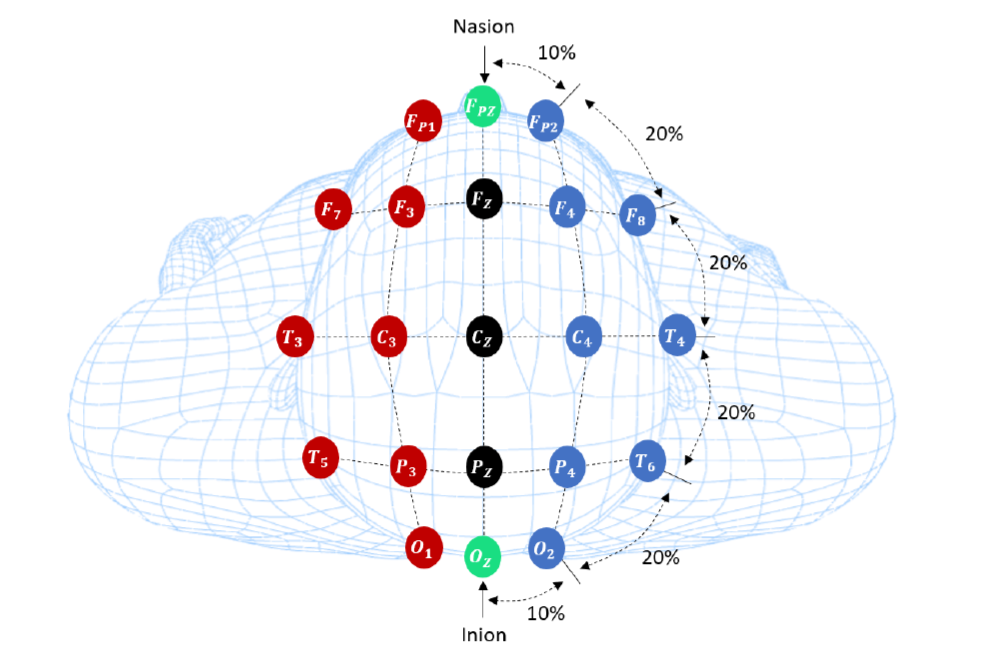
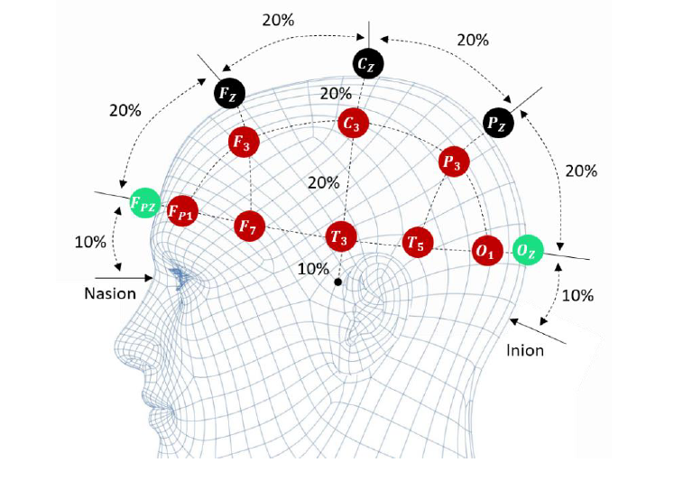
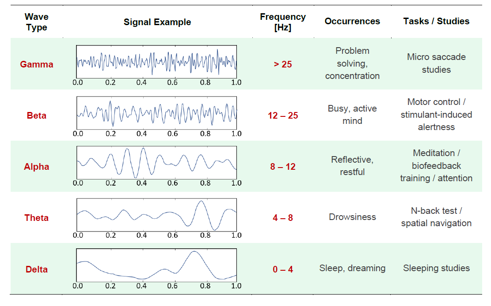

Hardware

Caractéristiques des capteurs
EEG
Que souhaitez vous analyser ?
1 Herculano-Houzel, Suzana. "The human brain in numbers: a linearly scaled-up primate brain." Frontiers in human neuroscience 3 (2009): 31.
2 Farnsworth, B. "EEG (Electroencephalography): The Complete Pocket Guide." (2019).
3 Bansal, Dipali, and Rashima Mahajan. EEG-Based Brain-Computer Interfaces: Cognitive Analysis and Control Applications. Academic Press, 2019 Placement des electrodes ("internationnal 10-20 system")   4 Abhang, Priyanka A., Bharti W. Gawali, and Suresh C. Mehrotra.” Chapter 2 - Technological Basics of EEG Recording and Operation of Apparatus”, Introduction to EEG-and speech-based emotion recognition. Academic Press, p.19-50, 2016.
1 mesure = 2 electrodes + 1 electrodes reférence mesure différence de potentiel electrique entre 2 electrodes les 5 fréquences d'ondes 
aspects pratiques
EEG sensor: • The measured signal is the amplified difference between the two measuring signals which is bandpass filtered by 0.8-48Hz to eliminate the common unwanted signals (see EEG datasheet). • The high amplification (gain=40000) makes it very sensitive to surrounding artefacts such as light, movements and power supplies (50/60 Hz line noise). • It is important to establish an appropriate environment to ensure optimal performance of the sensor. • The test subject should suppress any muscular activation while the acquisition is performed especially in the facial area (eye movements and eye blinking) as well as neck and jaw movements (clenching/ chewing). • This can be done by placing a big cross in front of the subject to focus their eyes on while performing the task (if the task is not visually displayed). • To record some artefacts, it is recommended to acquire such data using EOG (Electrooculography), EMG (Electromyography), and ECG (Electrocardiography) if available. • Movement artefacts can also be recorded with a video camera or written down for each time segment. • The skin should be properly prepared before sticking the electrodes onto it. • Disinfection of the skin to remove old skin particles and if needed removal of hair should be considered.
Software
Applications EEG
In medical applications, EEG is typically used for the diagnosis of disorders or diseases in the brain that cause abnormalities which can be seen in the EEG signal such as in the case of epilepsy or sleep disorder. EEG can also be helpful when used with a brain-computer interface (BCI) for example for patients with a spinal cord injury, brainstem stroke, or amyotrophic lateral sclerosis (ALS) which are “locked in” their bodies without being able to communicate. Such patients with severe motor disabilities need alternative communication methods. The BCI extracts “features” from the brain signals and can trigger external device such as a switch, prostheses, or computersE. Costa, K. Baptista, J. Cavalho, J. Costa, Influence of thermal environment on occipital EEG signal amplitude in sedentary activities, in International Journal of Occupational and Environmental Safety, vol.3, vol.1, 2019
J. Heinisch, I. Hübener, K. David, The Impact of Physical Activities on the Physiological Response to Emotions, in Proc. of the International Conference on Pervasive Computing and Communications Workshops (PerCom Workshops), 2018
L. Shu, J. Xie, M. Yang, Z. Li, D. Liao, X. Xu, X. Yang, A review of Emotion Recognition Using Phyisological Signals, in Sensors, vol. 18, no. 2074, pp. 1-41, 2018
E. Sürer, Physical and Cognitive Training of Children with Down Syndrome Using Video Games, in Smart Objects and Technologies for Social Good, pp. 362-365, 2017
A. Hariharan, M. Thomas, P. Adam, K. Fuong, Towards Understanding the Interplay of Cognitive Demand and Arousal in Auction Bidding, in Proc. of the European Conf. On Information Systems (ECIS), 2014
https://link.springer.com/chapter/10.1007%2F978-3-319-07230-2_69
https://www.jstage.jst.go.jp/article/jsaeijae/11/3/11_20204478/_article/-char/ja/
https://arxiv.org/abs/2102.00414
https://www.researchgate.net/publication/331432633_The_Mindfulness_Meditation_Effect_on_Brain_Electrical_Activity_Stress_Assessment_Concentration_State_and_Quality_of_Life
https://link.springer.com/chapter/10.1007/978-3-030-58285-2_32